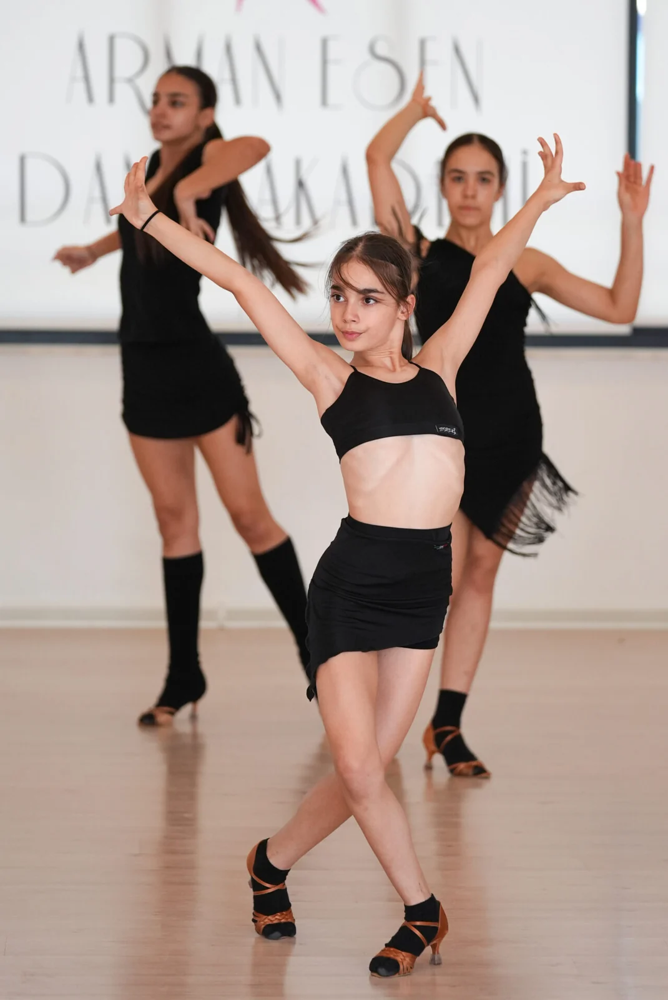

8 yaşında Tip 1 diyabet tanısı alan Sahra İnamlık, kolundaki sensör ve vücudundaki pompayla sahneye çıkmayı seçti. 2026'da Selanik'te hem takım hem solo kategorisinde Avrupa Şampiyonu oldu — 10 ülke, 15 takım ve 17 ülke, 74 sporcu arasında.
Üç kardeşin ortancası. 6-7 yaşında temel dans eğitimine başladı; ablası Azra'nın bir yarışmasını izledikten sonra Latin dansına yöneldi.
8 yaşında Tip 1 diyabet tanısı aldı. Şekeri 600'e çıktığında komaya girmeden hastaneye yatırıldı; kolunda sensör ve vücudunda pompa ile taburcu oldu.
Bugün günlük kan şekeri takibini kendisi yönetiyor: karbonhidrat sayımı yapıyor, insülin dozunu planlıyor, antrenman öncesi şekerine göre takviye alıyor.
Haftanın 6 günü, günde en az 3 saat antrenman. Hem solo hem koreografi Latin takım branşında yarışıyor.
Her satır bir resmî kaynağa bağlı. Federasyon sonuç belgeleri ve haber yazıları doğrudan gösterilmiştir.
Dans benim için sadece eyleme geçmek değil, bir tutku ve bir güç. Kötü hissettiğimde de mutlu olduğumda da dans ediyorum.
Sahra İnamlık — Avrupa şampiyonluğu sonrasıKolumda sensör, kalbimde bir hayal var. Çünkü inanıyorum ki hayaller engel tanımaz.
Sahra İnamlık — Bornova Diyabet Günü söyleşisiDans olmasaydı benim için hayat daha zor olurdu. Çünkü dans aslında organlarımı sağlıklı tutan bir parça.
Sahra İnamlıkAnnem beni Latin dansına yazdırır mısın? Ben şampiyon olmak istiyorum.
Sahra İnamlık — 8 yaşında, annesi anlatıyorBilinçsiz bir şekilde hastaneye gittik ama Sahra yürüyerek girdi ve yürüyerek çıktı. Gücünü bize bir kere daha gösterdi.
Gaye İnamlık — anneSahra'nın sahnede, stüdyoda ve gündelik hayatından kareler. (32 fotoğraf · yüz tanıma modeliyle doğrulandı)
Sahra'nın ve ailenin anlattığı hikâyeler.
Her iddia doğrulanabilir bir kaynağa bağlıdır.

⬇ Orijinali indir